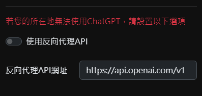
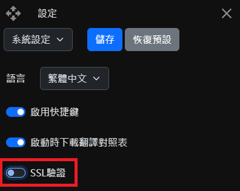

- 勾選【使用反向代理API】啟用反向代理
-
在【反向代理API
URL】輸入您的反向代理API網址(例：https://api.openai.com/v1)，請確認網址包含/v1，且網址末尾不帶/，設置完成後儲存設定

-
若您的反向代理不使用SSL驗證，請至【系統設定】將SSL驗證關閉並儲存設定

-
OpenAI提示詞
默認值：You will be provided with a sentence in $source, and your task is to translate it into $target.
儅用戶設置該值時，使用用戶輸入的提示詞；儅該值爲空時，默認使用内置提示詞
提示詞必須包含 $source 和 $target，分別表示需要翻譯的語言和翻譯後的語言。
提示詞舉例：我希望你擔任語言翻譯進行拼寫糾正和改進。我會用$source與你交談，你需要檢測該語言，將其翻譯為$target並用該文本的更正和改進版本（$target）進行回答。我希望你將名詞或句子替換為更漂亮、優雅、更高水平的$target名詞和句子。保持含義相同，但使它們更具文學性。我希望你只回復更正、改進，不要寫任何其他內容，不要寫解釋。